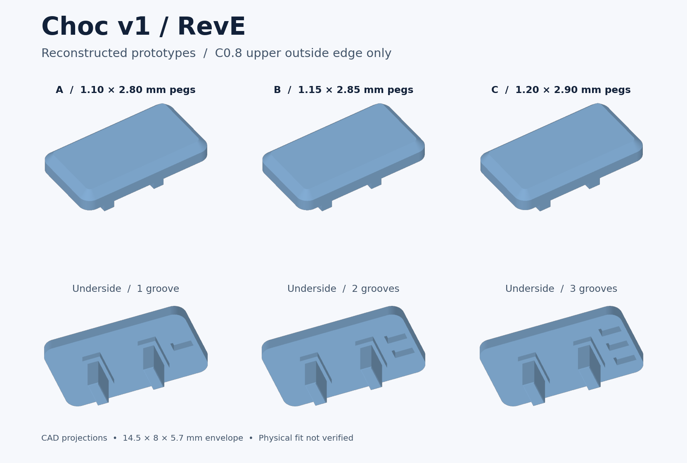
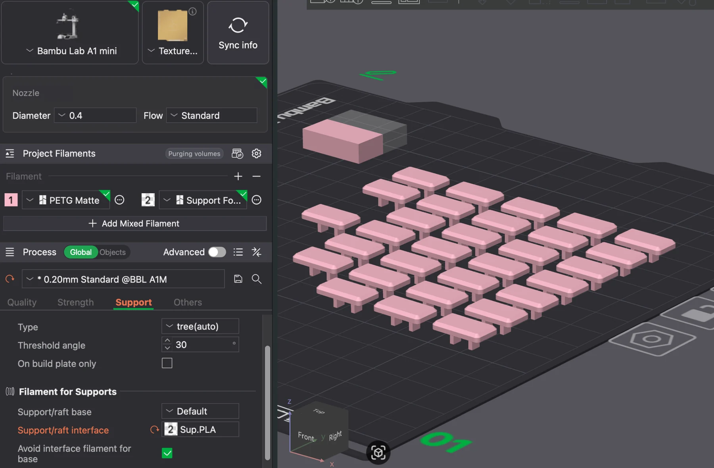
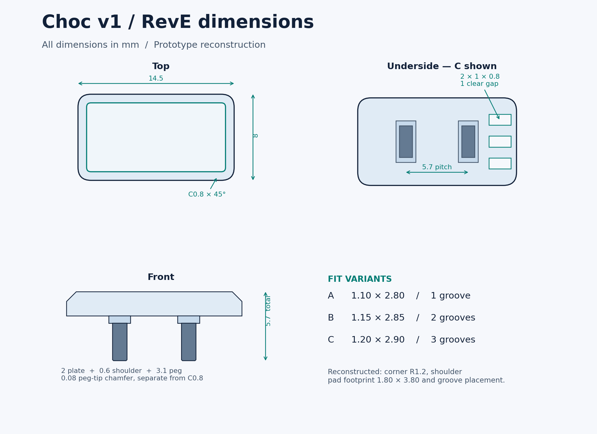

3D PRINT · REV E
Choc v1
細長キーキャップ
16 mmピッチの自作キーボード向け。奥行き8 mmの小型キーキャップを、取り付け脚の太さが異なるA・B・Cの3種類で作りました。

試作での嵌合
手元で試したところ、JLC3DPではC、Bambu Lab A1 miniでPETGを使った場合はBがちょうどよくはまりました。
試作時の結果です。材料・造形条件・スイッチの個体差で嵌合は変わるので、まず少数で試してください。
寸法と3種類の違い
外形14.5 × 8.0 × 5.7 mm、脚の中心間5.7 mm。天面の外周だけを0.8 mm × 45°で面取りしています。
| 種類 | 脚の断面（mm） | 裏の溝 |
|---|---|---|
| A | 1.10 × 2.80 | 1本 |
| B | 1.15 × 2.85 | 2本 |
| C | 1.20 × 2.90 | 3本 |
Bambu Studio の造形設定

寸法図
ZIPにはA・B・C各1種類のSTLとSTEP、寸法図、CadQueryソース、CAD検証結果が含まれます。STLはmmとして読み込んでください。
